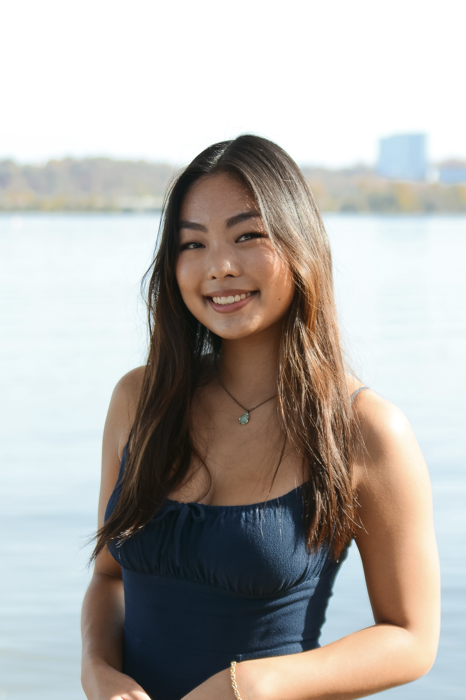
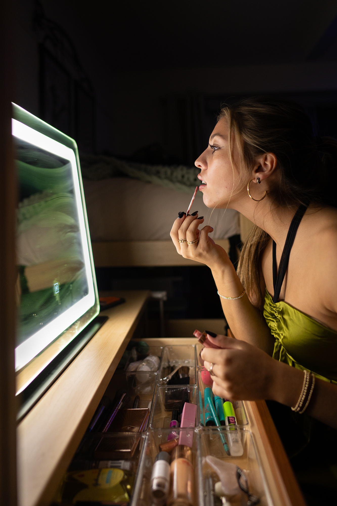
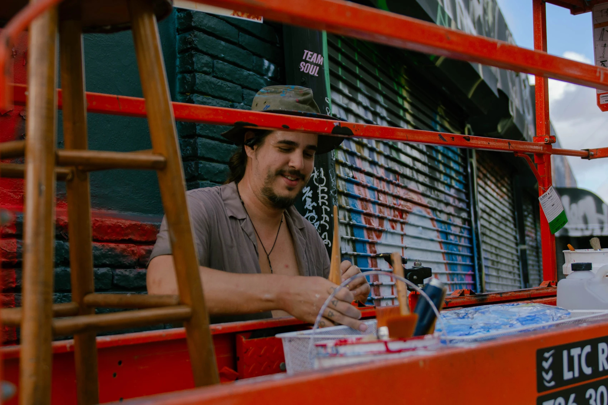
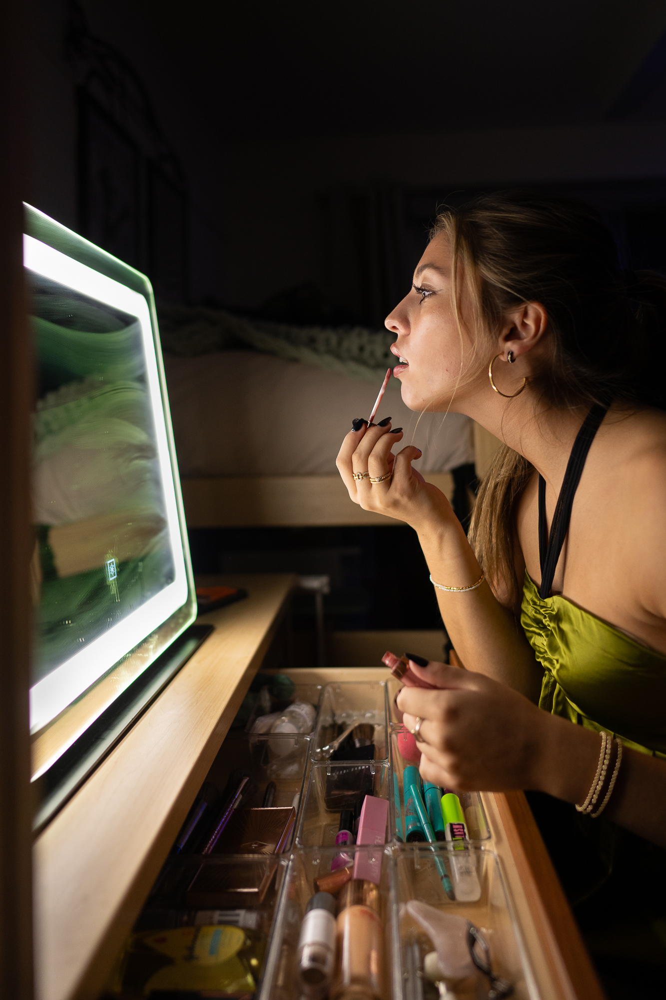
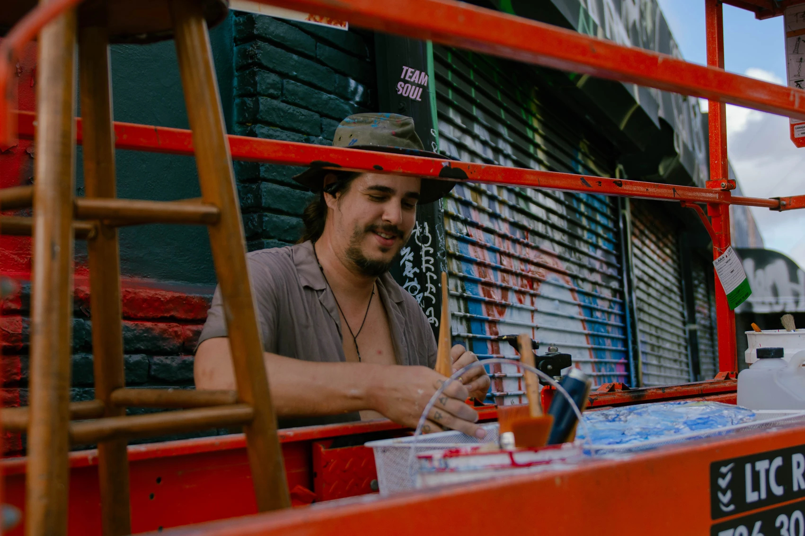
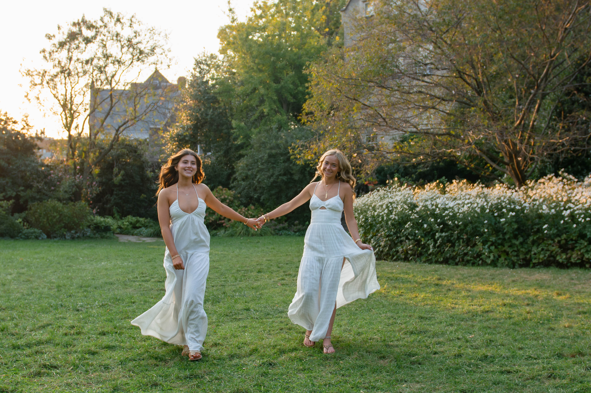
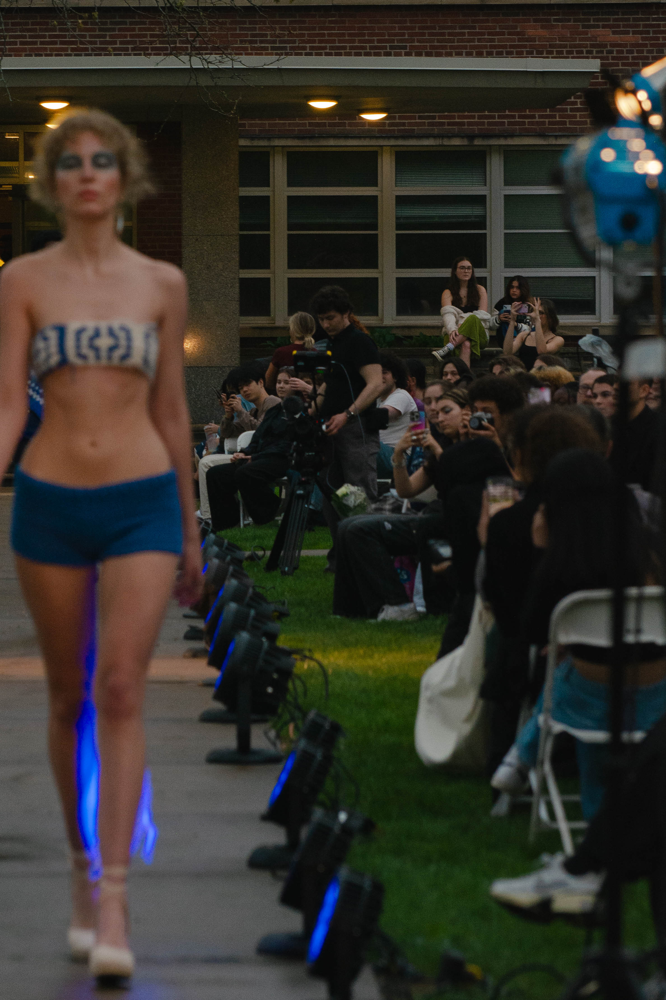
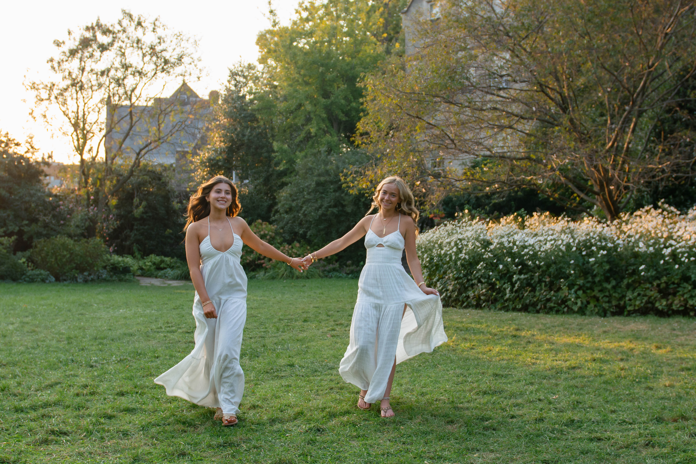
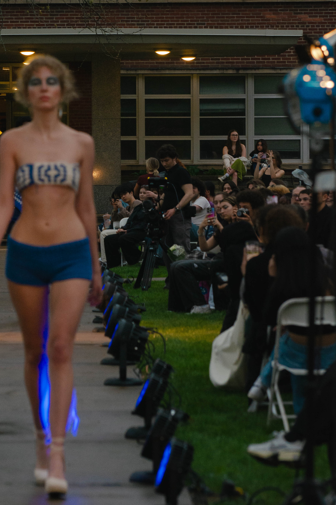

Welcome
My name is Calysta Lee, and I am a student photographer based in Washington, D.C. and Syracuse, New York. I am currently continuing my studies of visual communications at The S.I. Newhouse School of Public Communications at Syracuse University in hopes of taking my visual storytelling to the next level. I have 5 years of photography experience, ranging from sports coverage, portrait sessions, and journalistic documentary. I have recently began a focus of cinematography in my studies, where I am learning how to effectively tell stories through video and multimedia.



 



 


